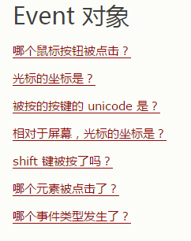

事件
当用户点击鼠标时 onclick / ondblclick
当网页已加载时 onload
当图片已加载时 *
当鼠标移动到元素上时 onmouseover /
当输入字段被改变时 onchange
当 HTML 表单被提交时 onsubmit
当用户触发按键时 onkeydown / onkeypress / onkeyup
课堂作业: 1.速度和数量可调
课堂作业: 2.每个雪花被点击的时候都销毁
下落速度:
产生频率:
修改动画:
开始:
清空:
